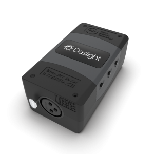
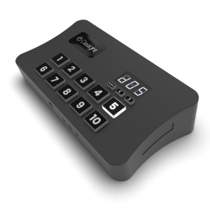
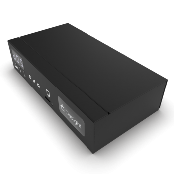

Die Daslight-Software kann kostenlos heruntergeladen werden, erfordert jedoch ein Daslight-USB- oder Ethernet-Interface,
um die Daten der Software in DMX-Signale umzuwandeln, die Ihre Lampen verstehen. Jedes DVC-Interface enthält zudem einen
Stand-Alone-Speicher, sodass Ihre Show auf das Gerät gespielt und dann auch ohne Computer ausgeführt werden kann — ideal
als Live-Backup oder für kleinere Shows
| device | dvc fun | dvc gold | dvc gzm |
|---|---|---|---|
| Preis | 179 Euro | 449 Euro | 699 Euro |
| USB | type C | type C | type B |
| XLR | 1 x 3-pin | 4 x 3-pin | 4 x 3-pin |
| Ethernet | - | RJ45 | RJ45 |
| Housing | Plastic | Plastic | Metal |
| Buttons | 3 | 13 | 3 |
| Memory | 50kb | SD card | SD card |
| live | dvc c | dvc gold | dvc gzm |
| Live Channels by default (XLR) | 128 | 1024 | 1536 |
| Live Channels max (XLR) | 512 | 2048 | 2048 |
| Live Art-Net univeres | Optional | Optional | 1 |
| Live Art-Net universes max | 100 | 100 | 100 |
| DMX IN mode | Optional | Yes | Yes |
| Daslight 4 | Express | Full | Full |
| Daslight 5 | Express | Full | Full |
| stand alone | dvc fun | dvc gold | dvc gzm |
| SA Channels by default | 128 | 512 | 512 |
| SA Channels max | 512 | 2048 | 2048 |
| SD card memory | - | Yes | Yes |
| Zones | 1 | 5 | 5 |
| Scene in total | 99 | 99 | 99 |
| Direct access keys | - | 10 | - |
| App/Api trigerring | - | Yes | Yes |
| Stand alone, buiding with | Daslight 4/5 | Daslight 4/5 | Daslight 4/5 |
| Kaufen | DVC-FUN | DVC-GOLD | DVC-GZM |
 |
 |
 |
DVC FUN: Erweiterbar auf bis zu 512 Kanäle und den FULL-Modus der Software.
Im Express Mode bietet die Software keine Super Scenes, keinen Live Mixer und eine Begrenzung auf 4 gleichzeitige Szenen.
DVC GOLD: Wird mit 1024 Kanälen ausgeliefert und kann auf 2048 Kanäle (4x XLR) erweitert werden, bzw. bis zu 100 Universen per Art-Net.
DVC GZM:Wird mit 1536 DMX-Kanälen per XLR und zusätzlich 1536 Art-Net-Kanälen (Ausgabe direkt über den Computer) ausgeliefert.
Das Interface kann auf 2048 DMX-Kanäle (4x XLR) erweitert werden, und bis zu 51.200 Kanäle (100 Universen) per Art-Net.
* 1536 über 3 und 5 Pin XLR Stecker, 1536 über Art-Net unter Verwendung des Netzwerk Adapters des Computers
** Der RJ45 Anschluss wird als Alternative zu USB-Verbindung verwendet, doch er bietet keinen Art-Net-Output .
Der Anschluss erlaubt es ebenfalls, das Gerät mittels der "Easy Remote Pro"-App per Netzwerk zu steuern.
*** Verfügbar als Upgrade auf DMXSoft.com.